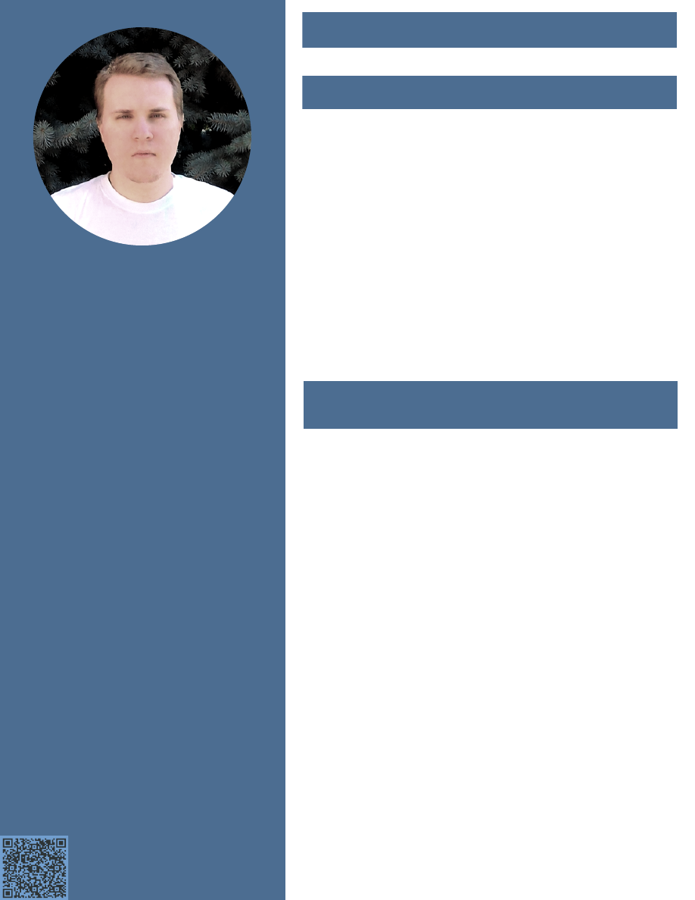

Андрей
Беднов
Разработчик
программного
обеспечения
DevOps Инженер
Контакты
Опытный разработчик программного обеспечения, крайне
увлеченный современными тенденциями технологий - программным
обеспечением с открытым исходным кодом, GNU/Linux, разработкой
серверного программного обеспечения и системного
промежуточного ПО на Go и Rust, для распределенных сетевых
сервисов, управляемых облачных и сетевых инфраструктур,
внедрением методик DevOps для автоматизации процессов
разработки ПО, интеграцией и использованием облачных
инфраструктурных решений (сервисно-ориентированных архитектур
SOA, по модели IaaS, PaaS, FaaS, сервисных шин ESB, промежуточного
ПО для управления очередями сообщений MOM/MQ для интеграции
сервисов), использованием Docker, Kubernetes, CoreOS, OpenStack,
Juju, MaaS, работой с выскоконагруженными системами, их
масштабированием, большими данными, сбором и анализом данных.
Эти направления очень интересны для меня, имеют очень высокий
приоритет и важность для моего личностного роста.
Нахожусь в поиске предложений работы, вакансий, компаний и
команд для продолжения опыта работы в этих направлениях и для
долгосрочного трудоустройства.
О себе
Персональные данные
Дата рождения: 2 Февраля, 1989
Место рождения: Бишкек, Кыргызстан
Место проживания: Бишкек, Кыргызстан,
720010
Гражданство: Кыргызской Республики
█
Разработчик ПО: Go, Rust
Возможности трудоустройства
Знания, опыт и навыки ::
Разработка ПО
Языки программирования со статической проверкой типов в фазе
компиляции программы:
█
⦁
Rust (rustc)
█
⦁
Go (go, gccgo)
█
⦁
Pony (ponyc)
Языки программирования с потоковой и поэтапной проверкой
типов:
█
⦁
Python (PEP-484 aka mypy, Cython)
█
⦁
TypeScript (tsc with Node.js/V8)
Языки программирования сценариев с динамической проверкой
типов в фазе исполнения программы:
█
⦁
Python (CPython, PyPy, Jython)
█
⦁
JavaScript/ECMAScript (Node.js/V8)
█
⦁
Shell Scripting (sh, bash, dash, ash)
Языки таблиц стилей (препроцессоры CSS):
██
SASS/SCSS, LESS, Stylus
Системы контроля изменений и версий исходного кода проектов:
██
Git, Mercurial (hg), Bazaar (bzr), Subversion (svn)
Системы управления базами данных (СУБД):
█
⦁
Реляционные СУБД: PostgreSQL, Postgres-XL, MySQL, MariaDB,
█⦁
CockroachDB, SQLite
█
⦁
Key-value хранилища: Redis+Sentinel, Memcached, Tarantool,
█⦁
Elliptics, BerkeleyDB, RocksDB
█
⦁
Документные хранилища: MongoDB, CouchBase
█
⦁
Графовые СУБД: OrientDB
█
⦁
Поисковые системы: Elasticsearch, Sphinx
█
⦁
Хранилища временных рядов: RRDtool, Prometheus, InfluxDB,
█⦁
Graphite
█
⦁
Распределённые хранилища и ФС: Ceph, GlusterFS
Страница №1
Владение языками
Русский: родной язык
Английский: профессиональное владение
(B2)
En
print
pdf
pdf.view
@andrcmdr
andy.bednoff
linkedin.com/in/andrcmdr
commandr.stream/call
andrew@commandr.stream
+996 709 77 33 99
E-mail:
Мобильный №:
Telegram, Wire:
Hangouts:
Skype:
LinkedIn:
Форматы сериализации данных и языки разметки для
хранения конфигураций, обеспечения API протоколов
передачи данных и вызова процедур - шаблонизаторы,
препроцессоры стуктур, схем и моделей данных:
██
JSON (REST, RPC, GraphQL), Protocol Buffers (gRPC, Thrift),
██
YAML, TOML, XML + XML Schema (RPC, SOAP)
Инструменты автоматизации сборки, управления
и разрешения зависимостей, обеспечения и
формирования поставки, развертывания и кэширования
пакетов:
█
⦁
Независимые от языка: GNU Make, Meson, Sonatype Nexus
█
⦁
Rust: Cargo
█
⦁
Go: go toolchain (go get/install/build/mod), dep, Manul,
█⦁
Glide, GoPM+Switch, gopkg.in
█
⦁
Python: PIP (Python Wheels) & EasyInstall/SetupTools
█⦁
(Python Eggs) + VirtualEnv
█
⦁
Node.js: NPM
█
⦁
JavaScript: Gulp, Grunt, webpack, Bower
Фреймворки - асинхронные, событийно управляемые,
с неблокирующим вводом-выводом, для создания
многопоточных сетевых приложений и серверов,
инструменты объектно-реляционного отображения
данных (ORM), шаблонизаторы:
█
⦁
Rust: Crossbeam, Rayon, MIO, Tokio, tokio-minihttp/http2,
█⦁
Hyper, Rocket, Gotham, Actix, Nickel, Iron, Diesel (ORM)
█
⦁
Go: Iris, Aah, Echo, Beego
█
⦁
Pony: Wallaroo
█
⦁
Python: Falcon, Bottle, wheezy.web, APIStar, Meinheld,
█⦁
Gunicorn+WSGI, Twisted, Tornado, SQLAlchemy, SQLObject
█
⦁
Node.js: Express.js, ECT.js, Dust.js, Hogan.js, Handlebars.js,
█⦁
Mustache.js
█
⦁
JavaScript: jQuery, ECT.js, Prototype, Underscore, Backbone,
█⦁
Ember, Angular, React, React Native, Polymer, Ionic, Apache
█⦁
Cordova, Adobe PhoneGap, Electron, NW.js (node-webkit)
Инструменты для вызова системных функций и
связывания программ и низкоуровневых библиотек (FFI):
██
rust-ffi (Rust), cgo (Go), ctypes and cffi (Python),
██
node-ffi (Node.js), SWIG
Системные библиотеки и библиотеки элементов
интерфейса:
██
GLib (GObject/GType, GModule, GThread, GIO), GTK+, Qt,
██
QML, wxWidgets, ncurses
Промежуточное ПО управления очередями сообщений
(MOM/MQ) - обеспечения среды и протоколов передачи и
доставки сообщений, брокеры очередей сообщений:
█
⦁
NATS (text-based pub/sub protocol)
█
⦁
Redis Pub/Sub + Sentinel
█
⦁
ZeroMQ (brokerless MQ)
█
⦁
Celery (task/job queue)
█
⦁
RabbitMQ (AMQP, MQTT, STOMP)
█
⦁
Apache ActiveMQ (AMQP, MQTT, STOMP)
█
⦁
Apache Qpid (AMQP)
Редакторы исходного кода и среды разработки (IDE):
██
Sublime Text, Visual Studio Code, Atom IDE, GNOME Builder,
██
Glade, wxGlade, Qt Creator, IntelliJ IDEA, GoLand, PyCharm,
██
WebStorm
Знания, опыт и навыки ::
Разработка ПО
Страница №2
Системы совместной работы, управления проектами,
контроля изменений и версий исходного кода (кодовой
базы) проектов, отслеживания ошибок:
██
Gitea, Gogs, GitLab, BitBucket Server
██
Phabricator, Tuleap, Jira
██
Roundup, Trac, RedMine
██
Flyspray, Mantis, Bugzilla
Системы документации:
██
Sphinx, MoinMoin, DokuWiki, MediaWiki, Confluence
Системы непрерывной интеграции/внедрения (CI):
██
Jenkins, Drone, GitLab CI, Travis, JetBrains Team City,
██
Atlassian Bamboo
Динамический анализ программ - непрерывное
тестирование (CT) и обеспечение качества ПО (QA):
█
⦁
Инструменты автоматизации тестирования ПО для
█⦁
функционального и приёмочного тестирования:
█⦁
CasperJS (for PhantomJS and SlimerJS headless browser
█⦁
engines), Selenium, Cucumber/Gherkin (TDD/BDD)
█
⦁
Инструменты автоматизации интерфейсного GUI
█⦁
тестирования ПО: dogtail, xdotool, AutoIt
█
⦁
Инструменты нагрузочного и стресс-тестирования
█⦁
производительности ПО: wrk/wrk2, Apache JMeter
Статический анализ программ - тестирование
безопасности ПО:
█⦁
Coverity Scan, Pfff, Infer, Flow
Системы непрерывной поставки и развёртывания (CD):
█
⦁
Инструменты контейнеризации и изоляции окружений:
█⦁
Docker, Docker Compose, Portainer, LXC/LXD, Rocket (rkt,
█⦁
CoreOS), Atomic, Rancher, Oracle Railcar, Packer, Vagrant,
█⦁
Flatpak, Snapcraft (Snappy), AppImage
█
⦁
Системы управления облачной инфраструктурой (PaaS,
█⦁
IaaS, FaaS/Serverless) и роем сервисов, кластеризации и
█⦁
оркестрации контейнерных сред:
█⦁
Docker Swarm, Kubernetes, Juju, MaaS, OpenStack,
█⦁
OpenFaaS, Oracle Fn
Системы непрерывной конфигурации (CC) и обеспечения/
снабжения - Инфраструктура как код (IaC):
█
⦁
Системы управления непрерывной конфигурацией:
█⦁
Ansible, Terraform, Nomad, Juju, Salt Stack
█
⦁
Системы обнаружения и обеспечения сетевой поддержки
█⦁
роя сервисов (ESB):
█⦁
SkyDNS, Consul, Serf, Conduit, LinkerD, etcd, dnsmasq
█
⦁
Хранение и управление секретами: Vault
Системы непрерывного мониторинга (CM):
█
⦁
Инструменты мониторинга и логирования
█⦁
(журналирования):
█⦁
InfluxData (Telegraf, Chronograf, Kapacitor, InfluxDB),
█⦁
Consul, Prometheus, Graphite, Sentry, Grafana, ELK Stack
█⦁
(Elasticsearch, Logstash, Kibana), pprof, cAdvisor, RRDtool,
█⦁
MRTG, Ganglia, Nagios
SaaS, IaaS, PaaS, FaaS (serverless) сервисы:
█⦁
OpenShift, Heroku, Amazon EC2/S3/Lambda
Знания, опыт и навыки ::
DevOps инструментарий
Software Developer CV - Andrew Bednoff (in Russian)
Операционные системы и дистрибутивы ПО на базе
GNU/Linux:
█
⦁
Debian, Ubuntu Server/Cloud/Core
█
⦁
Arch, Gentoo
█
⦁
CoreOS, Atomic, Rancher, Alpine, OpenWRT, DD-WRT, Elastix
█
⦁
Fedora, Red Hat Enterprise Linux (RHEL), CentOS,
█⦁
Oracle Linux, Scientific
█
⦁
OpenSUSE, SUSE Linux Enterprise Desktop (SLED),
█⦁
SUSE Linux Enterprise Server (SLES)
Модули обеспечения безопасности ядра Linux:
██
SELinux, AppArmor
Фильтры сетевого трафика:
██
netfilter/iptables
Системы обнаружения и предотвращения сетевых
вторжений:
██
Snort, Suricata
Виртуализация:
██
Vagrant, Xen, KVM, QEMU, Oracle VirtualBox, VMware, Parallels
Веб-серверы (HTTP):
██
Nginx, Cherokee, Lighttpd, Hiawatha, Mongoose
Файловые серверы (FTP):
██
vsftpd, ProFTPd
Почтовые серверы:
██
Courier, Exim, Postfix, qmail, Qpopper+SpamAssassin, policyd
Серверы доставки и мгновенного обмена сообщениями
(XMPP/Jingle):
██
ejabberd, Openfire
Серверы доменных имён (DNS):
██
BIND, PowerDNS, djbdns/dbndns, dnsmasq
DHCP серверы:
██
ISC DHCP, Kea DHCP, dnsmasq
Серверы обеспечения динамической маршрутизации
(BGP/OSPF):
██
BIRD, GNU Zebra, Quagga
Прокси-серверы:
██
Squid, Polipo, Apache Traffic Server
Серверы других протоколов:
██
NTPd, OpenSSH, OpenVPN, OpenLDAP, FreeRADIUS,
██
Asterisk (WebRTC, SIP, H.323)
Страница №3
Технологии:
Windows, batch shell scripting, AutoIt
GNU/Linux (RedHat, Fedora Core,
Mandrake, SUSE, Debian, Gentoo, Arch),
shell scripting (including GNU/Bash,
AWK, sed)
Modula-2, Zonnon, Oberon-2
Delphi, Free Pascal + Lazarus
C, C++
i586/i686, x86-64 Assembly
Java, C#/Mono
Lua, MoonScript
JavaScript/ECMAScript (also
CoffeeScript)
Python
Node.js
TypeScript
Ruby
Crystal
Dart
Go
Rust
Pony
Знания, опыт и навыки ::
Хронология опыта
Знания, опыт и навыки ::
Администрирование систем и поддержка
процессов работы IT инфраструктуры
Общее количество
лет опыта - Период
использования на
практике:
10 - 2002-2012
10 - с 2008 как
СисАдмин
14 - с 2004 как
пользователь
6 - 2003-2009
8 - 2004-2012
5 - 2004-2009
3 - 2005-2008
4 - 2008-2012
6 - с 2012
6 - с 2012
5 - с 2013
4 - с 2014
4 - с 2014
4 - с 2014
3 - с 2015
3 - с 2015
3 - с 2015
3 - с 2015
1 - с 2017
Образование
Институт Интеграции Международных Образовательных Программ Кыргызского Национального
Университета (ИИМОП КНУ)
Специальность: Информатика и информационно-вычислительные технологии, Инженер по разработке программного
обеспечения
Специализация: Концепции языков программирования и системы типов данных; синтаксический и лексический анализ,
теория компиляторов и оптимизация кодогенерации; автоматизация методов проектирования и процессов разработки
программного обеспечения
2010-2012
Факультет Компьютерных Технологий и Интернет (ФКТИ) [Кыргызско-Американский Факультет (КАФ)]
Software Developer CV - Andrew Bednoff (in Russian)

Страница №4
Опыт работы
Накоплен долговременный опыт дизайна, проектирования, реализации, разработки, интеграции, внедрения и
развертывания различных серверных облачных инфраструктур и платформ, с применением сервисно-
ориентированных архитектур (SOA), нацеленных на обслуживание под высокой нагрузкой и обработку больших
потоков данных.
Дос-Кредо Банк (https://doscredobank.kg) - Бишкек, Кыргызстан
Разработчик ПО (Go), DevOps Инженер, Team-lead
██
Разработка новой платёжной системы (платёжного шлюза, процессинга) и smpp серверов для
██
сервисов sms сообщений. Внедрение с нуля DevOps процессов для автоматизации разработки в
██
команде.
OpenMesh (https://openmesh.com, httpss://cloudtrax.com) - Портлэнд, Орегон, США (удалённо)
Разработчик ПО (Go, Rust, Python, JS, Lua, Ruby), DevOps Инженер, Team-lead
██
Миграция кодовой базы всей наследуемой серверной облачной инфраструктуры и сетевых сервисов на стэк
██
технологий Go, Rust и Docker.
██
Разработка облачного сетевого контроллера для конфигурации удалённых управляемых крупномасштабных
██
беспроводных p2p mesh сетей, развёрнутых на множестве (mesh рой) встраиваемых IoT устройств (точках доступа,
██
сателлитах, мостах, шлюзах), работающих на кастомизированной ОС OpenWRT с интерфейсом конфигурации LuCI
██
и плагинами на Lua для конфигурации, логирования и сбора данных о работе устройств сети.
Saima Telecom (http://www.saimatelecom.kg, http://www.saima4g.kg) - Бишкек, Кыргызстан
Node.js разработчик серверного ПО отдела биллинга департамента ИТ
██
Разработка системы OLAP аналитики данных для БД биллинговой системы оператора
Независимая практика удалённой разработки ПО (фриланс) - Бишкек, Кыргызстан - Москва, Россия
Разработчик ПО на Python/Ruby/JavaScript (Node.js), Специалист по безопасности и автоматизации тестирования
ПО (QA)
██
Аудит безопасности, тестирование на проникновение и некорректную работоспособность, анализ уязвимостей и
██
некорректной работы биллинговой платформы Inline Telecom Solutions Bill-Master
BM Technologies, Umai payment system (http://umai.kg, http://bm.kg) - Бишкек, Кыргызстан
DevOps Инженер, Специалист по безопасности и автоматизации тестирования ПО (QA)
██
Консультации по тестированию, безопасности и планированию облачной инфраструктуры проекта, процессов
██
разработки, тестирования, поставки и развёртывания системы процессинга платёжных транзакций и её
██
интеграции с внешними системами. Внедрение и отлаживание автоматизации DevOps процессов разработки
██
проекта.
CodEx LLC (https://codex.io) - Вуллонгонг, Сидней, Новый Южный Уэльс, Австралия
Team-lead, Разработчик ПО, DevOps Инженер, Специалист по безопасности и автоматизации тестирования ПО (QA)
██
Создан стартап инкубатор телекоммуникационных и финтех проектов в Австралии (Вуллонгонг, Сидней).
██
Разработка высоконагруженных платформ комплексной автоматизации операторов связи (SaaS, PaaS):
██
⦁
Биллинговой платформы и платформы процессинга платёжных транзакций
██
⦁
Системы поддержки процессов работы, операционной деятельности и бизнес процессов операторов и
██⦁
предприятий связи (OSS/BSS)
██
⦁
Планирования ресурсов предприятия (ERP) и управления взаимодействием с клиентами (CRM)
██
Разработка с активным практическим использованием (dogfooding):
██
⦁
Коммуникационная платформа телефонии (IP PBX) и конференц-связи на базе WebRTC, чатов на базе XMPP,
██⦁
облачного хранения файлов и документооборота - стэк OwnCloud/NextCloud+SpreedMe, Asterisk, Elastix
██
⦁
Система учёта времени и тайм-менеджмента для удалённых внешних разработчиков, сотрудников и команд
██⦁
(WpaaS, рабочее место как сервис, терминальные сетевые сервисы для тонких клиентов)
Thuraya Telecom Satellite Operator (http://thuraya.com) - Дубай, ОАЭ
Разработчик ПО, системный администратор Unix (SysOps)
██
Разработка промежуточного ПО для программной платформы управления сетями связи, обеспечения поддержки
██
процессов работы и мониторинга (NOC)
Utel (UralSvyazInform) Telecom Carrier, ISP and Cellular Operator (http://usi.ru) - Екатеринбург, Россия
Разработчик ПО, системный администратор Unix (SysOps)
██
Разработка услуг, тарификаторов, сервисных связок и тарифных цепочек в биллинговой платформе для
██
автоматизации расчётов различных групп клиентов
NeoLabs ASP (http://neolabs.kz) - Алматы, Казахстан
Разработчик ПО, системный администратор Unix (SysOps)
██
Разработка биллинговой системы для хостинга и ASP (SaaS, PaaS) платформы
MegaLine ISP (http://megaline.kg) - Бишкек, Кыргызстан
Системный администратор Linux (SysOps) - Gentoo, Debian, Ubuntu
MegaCom Cellular Operator (http://megacom.kg/eng/) - Бишкек, Кыргызстан
Системный администратор Unix (SysOps), инженер поддержки процессов работы и мониторинга
Logic Direct Distribution LLC (http://logic.kg) - Бишкек, Кыргызстан
Инженер сетевого и аппаратного обеспечения (TechOps)
Период времени
работы:
Апрель 2018 -
Сентябрь 2018
Январь 2015 -
Апрель 2018
Сентябрь 2014 -
Декабрь 2014
Январь 2014 -
Сентябрь 2014
Сентябрь 2013 -
Декабрь 2013
Январь 2012 -
Сентябрь 2013
Январь 2011 -
Декабрь 2011
Апрель 2010 -
Декабрь 2010
Январь 2009 -
Апрель 2010
Сентябрь 2008 -
Январь 2009
Апрель 2008 -
Август 2008
Январь 2008 -
Апрель 2008